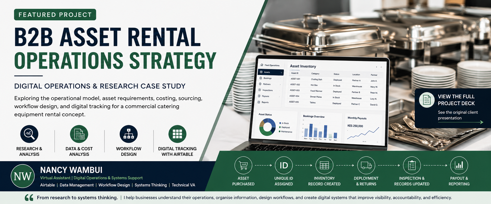

Virtual Assistance & Administration
Operations support
Reliable support for scheduling, stakeholder communication, records, documentation and the day-to-day work that keeps teams responsive.
Virtual Assistance • Digital Operations • Nairobi
TypeScript • Astro • React • Technical Operations • Nairobi
I help businesses stay organised, responsive, and operationally efficient through virtual assistance, digital systems, data organisation, and workflow support.
With a foundation in hands-on operations and administrative work, I’m building deeper technical capabilities across Airtable, website systems, frontend technologies, and SEO.
I build type-safe UI components, migrate slow landing pages to lightweight frameworks, and resolve technical SEO debt. No discovery calls required—operating entirely asynchronously for agencies.
View selected work
About
I’m Nancy Wambui, a Nairobi-based Virtual Assistant providing digital operations and systems support. I bring hands-on front-office and administrative experience to scheduling, stakeholder communication, documentation, data accuracy and sensitive records—then apply growing digital skills to make everyday work easier to manage.
Understand the workflow → organise the information → improve the process → make the work easier to manage. I use this approach across administrative support, documentation, data management, Airtable and website systems.
Services & Pricing
Operations support
Reliable support for scheduling, stakeholder communication, records, documentation and the day-to-day work that keeps teams responsive.
Structured systems
Organising information, creating useful tracking structures and clarifying workflows so operational work is easier to follow and review.
Systems support
Developing practical Airtable and spreadsheet structures for inventory, tasks, records and operational accountability.
Technical support
Supporting website content, structure and maintenance with developing practical knowledge of Astro, React and modern frontend systems.
Clear handover
Preparing organised documentation, presentations and operational materials that help people understand the work and next steps.
Supporting capability
Applying developing SEO and digital-content skills to help make website information clearer, better structured and easier to find.
Selected Work & Case Studies

A strategic B2B project exploring the operational model, asset requirements, costing, sourcing, workflow design and digital tracking for a commercial catering-equipment rental concept.
A full e-commerce storefront built from scratch with React, TypeScript, and Vite — featuring direct WhatsApp API checkout, a browsable product catalog, mobile-first conversion layout, and measurable performance gains from a technical SEO and accessibility audit.
A custom-coded health application layout built from scratch via the Astro framework to showcase technical optimization, speed audits, and local Kenyan keyword ranking strategy.
A comparison-led article built to target high-intent search traffic and support organic growth.
Read moreExplores the mismatch between ranking visibility and buyer intent, with a practical fix process for conversion-focused product pages.
Read moreWhy publishing more blog posts won't fix a technical SEO problem, and the three-part audit process that protects the ROI of your content strategy.
Read moreA compilation of interactive tracking sheets, inventory database templates, and executive agendas showing master-level control over admin metrics.
Request accessLive System Demo
This is a live, read-only view of the underlying relational database structure I build for operational agility.
Contact
If your growing team needs meticulous virtual administration, data handling, technical web management, or SEO content that performs, send a message.